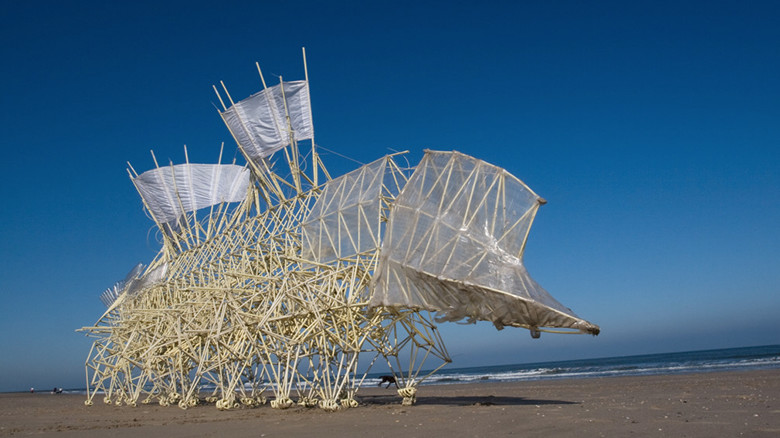

idea

Theo Jansen
https://www.youtube.com/watch?v=LewVEF2B_pM-どんな人
今回は芸術の意味でのアートというよりも、技術の意味でのアートがすごい作品を紹介します。プラスチックのチューブとボトルだけで、生物に近い動くアート作品を制作しています。
-解説
浜辺の潮風の力によって、自律歩行を行う機械生物です。構造は遺伝子コードに基づいて組み立てられているそうです。すごいところは、完全にアナログで、風力のみをエネルギーとしている点です。 仕組みの部分の詳しい説明は、作者がTEDでプレゼンしている動画がわかりやすくて面白いです。 https://www.ted.com/talks/theo_jansen_creates_new_creatures?autoplay=true&language=ja
-好きなところ
理系の知識がさっぱりなので、難しいことはよくわからないですが、風だけをエネルギーにして、人工生物の創造を行う試みは面白いと思いました。あと、ハウルの動く城っぽくて好きです。